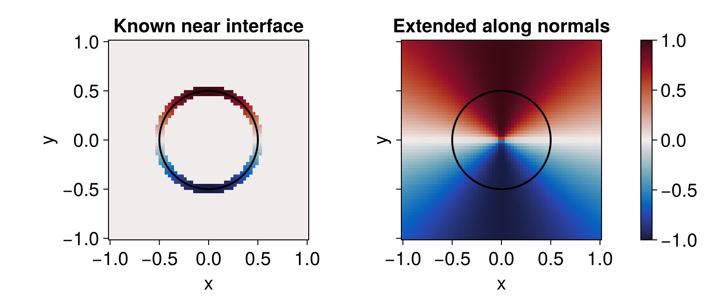

Velocity extension
Sometimes the speed that moves the interface is known only on the interface: it comes from a model evaluated at the front — a physical flux, a curvature law, an optimisation sensitivity. To advance the level set you need that speed at every node the update touches, not just at the zero set. Velocity extension fills in the surrounding nodes by carrying the interface values outward along the normal direction.
extend_along_normals! does this by solving, in pseudo-time, the transport equation
\[\partial_\tau F + \operatorname{sign}(\phi)\, \boldsymbol{n} \cdot \nabla F = 0, \qquad \boldsymbol{n} = \nabla\phi / |\nabla\phi|,\]
which pushes $F$ away from the interface along the normals until it is constant along each one — the construction of Peng et al. [5]. Because information flows outward from the front (the $\operatorname{sign}(\phi)$ factor flips the upwind direction on each side), the interface values act as the boundary data and the rest of the field is overwritten.
Extending a speed off the interface
The example below starts from a speed defined only in a thin band around a circle (here $\sin\theta$, with $\theta$ the polar angle) and extends it across the grid. Nodes inside the interface band are frozen by default — their values are the data being propagated — while everything else is filled in; pass frozen to choose the held nodes explicitly. We use a smooth, single-valued speed so that the extension is constant along each normal, which is the property we want to show: a discontinuous speed (e.g. $\theta$ itself, which jumps across the negative $x$-axis) would have that jump carried faithfully outward along the normals.
using LevelSetMethods
using CairoMakie
using StaticArrays
grid = CartesianGrid((-1, -1), (1, 1), (64, 64))
ϕ = MeshField(x -> hypot(x...) - 0.5, grid) # a circle, as a signed distance function
Δ = minimum(LevelSetMethods.meshsize(grid))
# a speed known only near the interface (sin of the polar angle); arbitrary elsewhere
F = MeshField(grid; bc = LinearExtrapolationBC()) do x
abs(hypot(x...) - 0.5) <= 1.5Δ ? sin(atan(x[2], x[1])) : 0.0
end
before = copy(values(F))
extend_along_normals!(F, ϕ; nb_iters = 90) # ≈ cfl*90 cells: enough to fill the grid
# interpolate the level set onto a fine grid for a smooth zero-contour
ϕi = InterpolatedField(ϕ, 1)
fine = range(-1, 1; length = 400)
ϕfine = [ϕi(SVector(x, y)) for x in fine, y in fine]
xs = ys = range(-1, 1; length = 64)
LevelSetMethods.set_makie_theme!()
fig = Figure(; size = (760, 330))
ax1 = Axis(fig[1, 1]; title = "Known near interface", aspect = 1)
ax2 = Axis(fig[1, 2]; title = "Extended along normals", aspect = 1, yticklabelsvisible = false)
heatmap!(ax1, xs, ys, before; colormap = :balance, colorrange = (-1, 1))
hm = heatmap!(ax2, xs, ys, values(F); colormap = :balance, colorrange = (-1, 1))
for ax in (ax1, ax2)
contour!(ax, fine, fine, ϕfine; levels = [0.0], color = :black, linewidth = 2)
end
Colorbar(fig[1, 3], hm)
fig
Each colored wedge in the right panel runs radially outward from the interface: the value is constant along every normal. Probing one ray at $\theta = \pi/4$ at three radii returns the same value — the interface speed $\sin(\pi/4)$, carried unchanged:
Fi = InterpolatedField(F, 1)
vals = [Fi(SVector(r * cos(π / 4), r * sin(π / 4))) for r in (0.3, 0.5, 0.8)]
vals3-element Vector{Float64}:
0.6983845939236776
0.7067694562537058
0.7021197496585991Driving a normal-speed term
The most common use is to supply the speed of a NormalMotionTerm: extend the known interface speed onto the band, then hand the extended field to the term so the front moves consistently everywhere. See the level-set terms page for a worked example.
Each call runs nb_iters upwind sweeps that advance at cfl cells per sweep, so the extension reaches about cfl * nb_iters cells from the interface (≈ 0.45 * nb_iters with the default cfl). Use just enough iterations to cover the band the scheme reads from (a few cells for a standard stencil), and re-extend whenever the interface — and hence its speed — has moved appreciably, typically from the same posthook used for reinitialization.